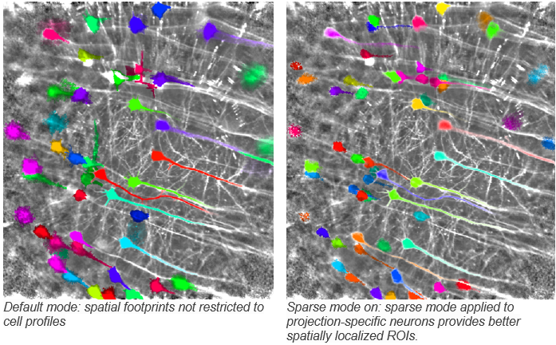
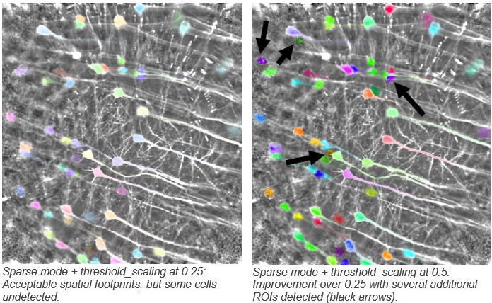

Suite2p Segmentation Parameter Explanations and Demos¶
Important note: parameters that users can define for segmentation are bolded. Explanations provided by the Suite2p authors are quoted thereafter. Notes and insight from parameter testing on our datasets are provided as bullet points.
sparse_mode: “(bool, default: False) whether or not to use sparse_mode cell detection”
diameter: (Not used in sparse_mode = 1)
spatial_scale: “(int, default: 0) What the optimal scale of the recording is in . if set to 0, then the algorithm determines it autompixelsatically (recommend this on the first try). If it seems off, set it yourself to the following values: 1 (=6 pixels), 2 (=12 pixels), 3 (=24 pixels), or 4 (=48 pixels).”
threshold_scaling: “(float, default: 5.0) This controls the threshold at which to detect ROIs (how much the ROIs have to stand out from the noise to be detected). if you set this higher, then fewer ROIs will be detected, and if you set it lower, more ROIs will be detected.”

To clarify, this is the threshold for the spatial correlation map. Any groups of pixels that have a local temporal correlation above the threshold will be considered for grouping to an ROI
max_overlap: “(float, default: 0.75) we allow overlapping ROIs during cell detection. After detection, ROIs with more than ops[‘max_overlap’] fraction of their pixels overlapping with other ROIs will be discarded. Therefore, to throw out NO ROIs, set this to 1.0.”
If recordings show dense cell labeling (ie. ROIs that are close to eachother an overlapping), setting this value
max_iterations: “(int, default: 20) How many iterations over which to extract cells - at most ops[‘max_iterations’], but usually stops before due to ops[‘threshold_scaling’] criterion.”